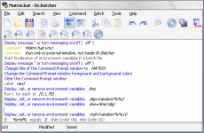

Как создать bat-файл в Windows 7/10 – редактируем и сохраняем батник

Использование графического интерфейса в операционных системах сегодня представляется чем-то само собой разумеющимся и совершенно естественным, но так было не всегда. Первая операционная система MS DOS, разработанная компанией Microsoft, не имела GUI, а управление выполнялось посредством ввода текстовых команд. С тех пор минуло без малого 40 лет, однако скриптовый язык командной строки по-прежнему пользуется популярностью, причём не только в среде разработчиков.
Командная строка не столь удобна, зато с её помощью можно выполнять недоступны из GUI операции. С другой стороны, запускать каждый раз консоль, вводить в неё одну за другой команды – всё это сильно замедляет работу.
Впрочем, можно существенно упростить задачу, создав бат-файл или попросту батник – текстовый файл с расширением BAT, содержащий список инструкций, обрабатываемых командным интерпретатором CMD.
Используются такие файлы для автоматизации разных задач, например, для удаления временных файлов по расписанию или запуска программ.
Как создать файл с расширением BAT
Итак, как создать bat-файл в Windows 7/10? Очень просто. Для этого понадобится любой текстовый редактор и знание основ командной строки. Можно использовать Блокнот, а ещё лучше Notepad++, так как последний имеет подсветку синтаксиса. Создайте в редакторе новый файл, в меню «Файл» выберите «Сохранить как», дайте будущему скрипту имя, а в выпадающем списке «Тип файла» выберите «Batch file (*bat; *cmd; *nt)».
Если для создания bat-файла захотите использовать Блокнот, расширение нужно присвоить вручную, а в списке «Тип файла» выбрать «Все файлы».
Как видите, создать файл с расширением bat не составляет сложности, есть тут, однако, свои тонкости. В командных файлах нельзя использовать перенос строк, кодировка bat-файла должна быть выставлена UTF-8, если в теле скрипта используется кириллица, кодировку нужно изменить, вставив в положенном месте команду chcp 1251.
Основные команды, синтаксис и примеры использования батников
Как сделать bat-файл вы знаете, теперь настала пора самого интересного, а именно синтаксиса языка интерпретатора CMD. Понятно, пустой батник работать не будет, он даже не запустится при двойном по нему клике.
Чтобы скрипт сработал, в нём должна быть прописана хотя бы одна команда. Для наглядного примера посмотрим, как написать bat-файл для запуска программ. Допустим, приступая к работе, вы каждый раз запускаете три программы – Chrome, Firefox и VLC.
Упростим задачу, создав скрипт, который будет сам запускать эти программы с интервалом в пять секунд.
Открываем пустой батник и вставляем в него такие команды:
start «» «C:/Program Files/Google/Chrome/Application/chrome.exe» timeout /t 05 start «» «C:/Program Files/Mozilla Firefox/firefox.exe» timeout /t 05 start «» «C:/Program Files/VideoLAN/VLC/vlc.exe»
Команда start запускает исполняемый файл нужной программы, а команда timeout /t задаёт интервал между запусками. Обратите внимание на расположение кавычек – в них берутся пути, в которых имеются пробелы. Также если в пути есть кириллические символы, в начало скрипта следует вставить изменяющую кодировку команду chcp 1251, в противном случае интерпретатор не сможет правильно прочитать путь.
При запуске скрипта будет последовательно открыто четыре окна консоли, это нормальное явление, по выполнении команд все они автоматически закроются, впрочем, можно сделать так, чтобы открывалось только первое окно. Для этого код запуска приложения следует изменить следующим образом:
start /b «» «путь»
Может также статься, что в определённый момент потребуется приостановить выполнение скрипта, чтобы пользователь сам смог решить, выполнять ли все остальные команды или нет. Для этого существует команда pause. Попробуйте заменить ею timeout и увидите, что получится.
start /b «» «путь» pause
Рассмотрим ещё один пример команд для bat файла. Напишем скрипт, который будет в одном случае выключать компьютер, а в другом – перезагружать его. Для этих целей мы будем использовать команду shutdown с параметрами /s, /r и /t. При желании можно добавить в батник запрос на выполнение действия, вот так:
@echo off chcp 1251 echo «Вы действительно хотите выключить компьютер?» pause shutdown /s /t 0
Поясняем. Первая команда скрывает текст самих команд, вторая – устанавливает кириллическую кодировку, третья – выводит сообщение для пользователя, четвертая – устанавливает паузу, пятая – выключает, а с ключом /r вместо /s перезагружает компьютер без традиционной задержки в одну минуту. Если не желаете церемониться с запросами и паузами, можете оставить только пятую команду.
Что ещё можно делать с помощью скриптов? Много чего, например, удалять, копировать или перемещать файлы. Допустим, у вас есть некая папка data в корне диска D, содержимое которой нужно очистить одним махом. Открываем батник и вставляем в него такую команду:
del /A /F /Q «D:/data»
А можно и так:
forfiles /p «D:/data» /s /m *.* /c «cmd /c Del @path»
В отличие от первой, вторая команда удаляет файлы рекурсивно, то есть в папке data будут удалены все файлы плюс те, которые лежат во вложенных каталогах.
А вот ещё один полезный пример. Напишем скрипт, который будет создавать резервную копию содержимого одной папки и сохранять данные в другую. За копирование отвечает команда robocopy:
robocopy C:/data D:/backup /e pause
Запустив такой батник на исполнение, вы скопируете все содержимое папки data в папку backup, включая вложенные каталоги, пустые и с файлами. К слову, команда robocopy имеет много параметров, позволяющих очень гибко настраивать параметры копирования.
Запуск bat-файлов от имени администратора и по расписанию, скрытый запуск bat
Теперь вы знаете как создавать батники и имеете некое общее представление о языке интерпретатора CMD. Это были основы, теперь пришла пора познакомиться с некоторыми полезными особенностями работы с bat-файлами. Известно, что для выполнения некоторых действий программам нужны права администратора. Понадобиться они могут и батникам. Самый очевидный способ запустить скрипт от имени администратора, это кликнуть по нему правой кнопкой мыши и выбрать в контекстном меню соответствующую опцию.
Кроме того, можно сделать так, что конкретный батник будет запускаться с повышенными привилегиями всегда. Для этого необходимо создать на такой скрипт обычный ярлык, открыть его свойства, нажать кнопку «Дополнительно» и отметить в открывшемся окошке галочкой пункт «Запуск от имени администратора». Этот способ хорош ещё тем, что позволяет выбрать для ярлыка любой значок, тогда как файл с расширением BAT или CMD всегда будет иметь невзрачный вид.
Скрипты, как и все приложения, можно запускать по расписанию. Команда timeout /t здесь не совсем уместна, для отложенного запуска лучше всего использовать встроенный «Планировщик задач» Windows. Здесь всё просто. Открываем командой taskschd.msc Планировщик, определяемся с триггером, действие выбираем «Запустить программу» и указываем путь к bat-файлу. Вот и всё, скрипт будет запущен в положенное время.
И напоследок ещё один интересный момент. Когда вы запускаете bat-файл, на экране появляется, пусть даже на какую-то долю секунды, окно командной строки. А нельзя ли сделать так, чтобы скрипт выполнялся в скрытом режиме? Можно, причём несколькими способами.
Самый простой заключается в следующем. Создаём на bat-файл ярлык, открываем его свойства и в меню «Окно» выбираем «Свёрнутое в значок».
После этого единственным видимым признаком запуска скрипта будет появление значка CMD на панели задач, окон же при этом открываться не будет.
Если вы желаете полностью скрыть выполнение скрипта, можете воспользоваться «костылем» – скриптом VВS, который будет запускать ваш батник в скрытом режиме. Текст скрипта приведен ниже, сохраните его в файл hidden.vbs, предварительно заменив путь во второй строчке кода D:/sсript.bat путём к вашему батнику.
Set WshShell = CreateObject(«WScript.Shell») WshShell.Run chr(34) & «D:\script.bat» & Chr(34), 0 Set WshShell = Nothing
Есть также и другие варианты, например, использование утилиты Hidden Start, позволяющей запускать исполняемые и пакетные файлы в скрытом режиме, в том числе без приглашения UAC.
А на этом пока всё. Информацию касательно создания скриптов BAT без труда можно найти в интернете. Неплохо также ознакомиться с учебником Уильяма Станека «Командная строка Microsoft Windows». Несмотря на то, что с момента издания книги прошло более десяти лет, содержащаяся в ней информация до сих пор актуальна.
Читайте также Как восстановить недавно удаленные файлы с компьютера
Источник: https://viarum.ru/kak-sozdat-bat-fayl-v-windows/
02 апреля 2010 г.
Люди, которым знаком термин батник, знают, что BAT файлы могут существенно упростить жизнь и экономить время, если уметь их правильно писать и использовать. В этой статье я расскажу о том, как создавать BAT файлы и познакомлю вас с распространенными ошибками, которые обычно возникают при их написании.
Создать BAT файл очень просто. Достаточно открыть блокнот и сохранить пустой лист с расширением .bat, выбрав опцию Сохранить как… и написав в поле Имя файла что-нибудь оканчивающееся на .bat, например test.bat.
Тип файла указываете как на скриншоте ниже — Все файлы. Сохраняете и получаете BAT файл.
Редактировать BAT файл можно в блокноте или любом другом текстовом редакторе, ориентированным на работу с кодом.
Теперь перейдем непосредственно к практической информации. В сети многие ищут ответ на вопрос Как быть с пробелами в BAT файлах?. В путях к папкам и исполняемым файлам наличие пробела вызывает ошибку. Самый распространенный ответ: Заключи путь в кавычки. И этот ответ не верен. Правда некоторые будут с пеной у рта утверждать, что он работает. Итак, появилось два почему — почему не верен и почему некоторые будут.
На Windows (как, впрочем, и на UNIX) установленные в системе программы соответствующим образом регистрируются системой. Поэтому некоторые из установленных программ могут запускаться одной простой командой из BAT файла или из апплета Выполнить панели Пуск. Одной из таких программ является Firefox:
start firefox
Если после этой команды писать путь к исполняемому файлу, то происходит следующее: запускается обозреватель Firefox и пробует обработать запрос, то есть файл, путь к которому указан. То есть, если указать следующее:
start firefox C:\Program Files\Mozilla Firefox\firefox.exe
Обозреватель откроется, чтобы не было написано после start firefox. Именно поэтому некоторые товарищи будут уверять что все прекрасно работает. Однако, если взять портативную программу, то ситуация окажется совсем иная. Рассмотрим в качестве примера ftp-клиент Filezilla. Поскольку система не знает о программе, вышеупомянутая строчка
start filezilla
работать не будет. Чтобы запустить неизвестную системе программу, надо указать к ней путь:
start D:\FileZilla\FileZilla.exe
Теперь поговорим о путях и пробелах. Первый способ избежать этой проблемы — использование короткого имени.
start C:\Program Files\Sound Club\scw.exe
В примере два имени с пробелами. Заменим их короткими. Правила создания коротких имен следующие: в коротком имени используются первые шесть символов имени без учета пробелов, после имени указывают порядковый номер папки с помощью символа ~. Так как папки Program Files и Sound Club у меня в единственном числе, получится следующее:
Program Files — Progra~1 Sound Club — SoundC~1 start C:\Progra~1\SoundC~1\scw.exe
Если рядом будут присутствовать две папки, например Sound Club и Sound Clown, то следуя правилам, в примере выше надо будет указать SoundC~2, так как в этом случае Sound Club окажется вторым именем (имена считаются в алфавитном порядке).
Но этот способ неудобен тем, что приходится указывать порядковые номера. Ситуация с Program files более менее нормальная. Мало у кого встретится две подобные папки на системном диске. Но если вы решили установить несколько продуктов Mozilla на свой компьютер. У вас получится несколько папок, например:
Mozilla Firefox Mozilla Thunderbird Mozilla Sunbird
Короткими именами для них будут
Mozill~1 Mozill~2 Mozill~3
А теперь представьте, что вы написали BAT файл с упоминанием этих программ. Если удалить Firefox, оставшиеся записи перестанут работать, а если удалить Thunderbird, перестанет работать запись для Sunbird. Короче, способ с короткими именами — не наш способ.
Пробелы и кавычки в bat-файлах
Кавычки на самом деле работают, но не с теми способами, которые обычно советуют. Советуют обычно следующее:
start «C:\Program Files\Sound Club\scw.exe»
Так команда не сработает, поскольку если посмотреть справку по ней (start /?), то в справке вы увидите следующее:
START [«заголовок»] [/D путь] [/I] [/MIN] [/MAX] [/SEPARATE | /SHARED] [/LOW | /NORMAL | /HIGH | /REALTIME | /ABOVENORMAL | /BELOWNORMAL] [/NODE узел NUMA] [/AFFINITY маска сходства] [/WAIT] [/B] [команда/программа] [параметры]
Как видите, первым параметром идёт заголовок окна и он как раз в кавычках. Этот параметр необязательный, но его всё же советуют указывать (например, тут), чтобы избежать ошибок при выполнении команды. Внутри кавычек можно ничего не писать. Получится так:
start «» «C:\Program Files\Sound Club\scw.exe»
Также сработает и вариант с заключением в кавычки всех имён с пробелами по отдельности:
start C:\»Program Files»\»Sound Club»\scw.exe
Однако, в ряде случаев не работает ничего из вышеописанного. В таких случаях я могу посоветовать использовать команду cd. Переходим на системный раздел, затем с помощью cd в папку Program Files и запускаем программу (start):
%SystemDrive% cd \Program Files\Sound Club\ start scw.exe
Я думаю, что такой способ будет работать везде. Теперь еще пара важных моментов. Допустим вы создали батник, запускающий три программы и вам нужно на время исключить запуск одной из трех. Это можно сделать удалением строки или ее комментированием. Первый способ — вандальный, а второй смотрите ниже.
start firefox start jetaudio
В данном случае отключен запуск установленной в системе программы Defraggler.exe. Комментируют строки, указывая команду rem в начале строки. Все BAT файлы выполняются в окне консоли. Чтобы оно исчезало по окончании выполнения команд, не забывайте в конце писать команду на выход exit.
start firefox start jetaudio exit
Запуск приложений из bat-файла
В первой части статьи я в общих чертах рассказал о BAT файлах. Теперь стало понятно — что это такое и с чем его едят. Во второй части речь пойдет уже о более конкретных вещах. Например, о том, как при помощи BAT файла запустить несколько приложений с определенными настройками или в автоматическом режиме установить программу, чтобы не тратить время на ответы типа Вы согласны с условиями лицензионного соглашения? и не нажимать лишние кнопки.
Выше было изложено несколько способов запуска приложений при помощи BAT файла. Самый первый — это короткая команда на запуск установленной в системе программы.
start firefox
Это не всегда работает. Поэтому такой прием можно вполне применять на какой-то конкретной системе, но в качестве универсального решения он не подходит. Если есть цель заставить работать BAT файл везде и всегда, нужно пользоваться полными путями:
start C:\»Program Files»\»Mozilla Firefox»\firefox.exe
Также я отметил, что в BAT файле обязательно должна присутствовать команда на завершение:
start C:\»Program Files»\»Mozilla Firefox»\firefox.exe exit
Программу можно не просто запускать, а давать ей дополнительные команды при запуске. Например, скомандовать запускаться свернутой:
start /min D:\FileZilla\FileZilla.exe exit
Скомандовать в данном случае — значит указать ключ. Ключ указывается через слэш после основной команды (команда /ключ). Основной командой в данном случае является start. Правда ключ min работает только в половине случаев, потому как относится именно к команде запуска start, а не к программам, которые эта команда запускает.
Вообще ключей существует очень много и наборы ключей разных программ могут существенно различаться. Есть, правда, несколько общих. Например, ключ справки (/? или /help). Чтобы проследить работу этого ключа, рассмотрим практический пример. Откройте консоль (Жмёте + R, вводите cmd, далее Enter) и набираете в консоли следующее:
Источник: http://nevor.ru/stati/operacionnye-sistemy/stati-dlya-windows/sozdanie-bat-fajlov
Создание файла с расширением BAT
Файлы BAT представляют собой текстовый документ, имеющий особое расширение. В него записывают команды для последующего их выполнения в командной строке. Запустив файл, вы активируете программу CMD, она считывает команды, которые последовательно исполняются. Таким способом можно облегчить работу с командной строкой, сохранив нужный порядок.
Конечно, можно вводить все команды сразу в командную строку вручную, однако, если требуется повторение одних и тех же операций, гораздо удобнее это произвести, запуская автоматическое считывание списка, записанного в форме документа bat.
Практичный и удобный этот вариант также тем, что впоследствии порядок можно изменять, дополнять новыми процессами, которые вам потребуются, а также удалить ненужные.
BAT содержит описание последовательности команд для выполнения их командным интерпретатором
BAT помогает автоматизировать процессы: запуск программ, архивацию, резервное копирование. Потому полезно знать, как создать bat-файл самому, корректировать и дополнять его.
Процесс работы через «Блокнот» вовсе не сложный. Если вы раньше никогда этим не занимались, то вполне справитесь, узнав, как создать bat-файл и дополнять в нём команды. Начнём с создания. Здесь действуйте строго по алгоритму:
Читайте также Восстановить ассоциации файлов по умолчанию Windows 7
В указанной вами папке появится пакетный файл с расширением .bat.
Открыть bat-файл проще, щёлкнув дважды по нему мышкой. Второй способ — запуск из командной строки: вводим адрес, где находится документ с расширением .bat, сохранённый вами.
Если захотите изменить документ — добавить в bat-файл команды, удалить некоторые из них, вписать другую программу для последующей работы с ней, — сделать это не сложно. Откройте документ посредством текстового редактора. Удобно это выполнить, нажав на bat-файл правой кнопкой, в открывшемся меню выбирайте «Изменить». Запустится «Блокнот» — там и можно редактировать команды, изменять содержание, вносит дополнения.
Новичку, только начинающему работать с командным интерпретатором, использующему его довольно редко, достаточно «Блокнота». Если хотите выйти на более высокий профессиональный уровень, рекомендуем применять утилиту Dr.Batcher. В Dr.Batcher можно нумеровать страницы, там есть поддержка закладок, список системных команд, применяемых в bat, введённые команды подсвечиваются.
Ниже приведены рекомендации, как работать в этой утилите: создание bat-файла, его изменение.
Алгоритм несложный, не требует особых навыков и профессионализма. Скачав утилиту, вы быстро сможете сделать всё необходимое.
Запустите Dr.Batcher.
При работе на компьютере часто возникает необходимость повтора одних и тех же DOS-команд для осуществления периодически исполняемых действий, построения сложной и многоуровневой последовательности исполняемых команд или приложений, автоматизации работы с приложениями и файлами с участием или в отсутствие пользователя. В операционной системе есть возможность записать несколько команд в bat-файле. При этом, просто запуская данный командный файл (часто его называют скрипт, или просто «батник»), можно осуществлять выполнение прописанных команд, а прописав его в событиях планировщика Windows, можно автоматизировать этот процесс.
Особенностью файлов данного типа является отсутствие внутри какого-либо кода — имеется только тактовая информация, которую считывает и исполняет командный DOS-процессор, совместимый практически со всеми версиями операционной системы Windows. Одним из ярких примеров является файл autoexec.bat, который необходим для запуска этой ОС, так как именно он осуществляет ее настройки в ходе запуска.
Основные возможности командных файлов
Команды, которые содержит bat-файл, по функционалу можно условно разделить на несколько групп:
— предназначенные для вывода на экран определенного значения, фразы, приложения или сведений;- для осуществления запуска пакетных документов;- для работы с циклами;- для создания ветвления исполнения с помощью условий;
— для работы с приложениями.
Запуск bat-файлов можно осуществить различными способами. При работе в командной строке в текущем каталоге можно просто вводить имена файлов с дополнительными параметрами или без них. При этом команды bat-файлов после запуска будут выполняться последовательно друг за другом, уже без вмешательства пользователя.
При нахождении командного файла в другом каталоге необходимо кроме полного имени этого файла прописать полный путь до каталога его хранения. Расширение файла также можно не прописывать. Например, текущий каталог d:\photo\work, а командный файл vera.bat, который нужно выполнить с параметрами resize.doc и /p, находится в каталоге d:\photo\home. Тогда для того, чтобы осуществился запуск нашего файла, нужно прописать команду d:\photo\home\vera resize.doc /p или команду ..\home\vera resize.doc /p.
Исполняемые после запуска команды bat-файлов можно прервать комбинациями кнопок + и +. На дисплее появится запрос на прерывание выполнения командного файла с запросом, ожидающим ввода Yes или No. Если ввести Y, то выполнение прервется, а оставшийся список команд bat-файла будет проигнорирован. Если введете символ N, то выполнение продолжится со следующей команды из списка.
Вызов другого командного файла
Bat-файлы могут содержать в себе ссылки на исполнение других скриптов. Если просто прописать в теле скрипта bat-файл, команды после него уже исполняться не будут, так как управление передается на другой батник и будут выполнены команды уже из него. Если требуется возврат после запуска внутреннего файла, то его можно вызвать командой CALL. Формат команды выглядит так: CALL имя-бат-файла [параметры запуска].
Параметрами, которые передаются вызываемому командному файлу (файлам), обычно являются символы %1 — %9. Когда команды bat-файлов все последовательно будут пройдены, продолжится выполнение исходного скрипта со следующей строки.
Бывают случаи, когда команды bat-файлов нужно выполнить пошагово (с остановкой после каждой строчки). Наиболее часто такой режим требуется при отладке или тестировании скриптов. Написание команды выглядит так: COMMAND /y/c имя _скрипта [параметры].
При выполнении на каждую команду будет выдаваться запрос Y или N. Если требуется выполнение команды — жмем клавишу Enter или Y. Если нужно пропустить команду — жмем ESC или N.
Отключение и включение вывода команд на экран
Когда запускается bat-файл, команды построчно перед выполнением отображаются на экране и после этого выполняются.
Иногда это вызывает неудобство, так как при большом батнике команды длинным списком пробегают перед пользователем на экране, а иногда требуется их показ, например, для диалога или отладки. Чтобы bat-файл команды выводил на дисплей, применяется команда ECHO ON.
Для отключения этого режима нужно ввести ECHO с параметром OFF. При этом все исполняемые далее команды показываться на экране уже не будут.
Для отключения вывода только какой-либо одной строки батника на экран можно использовать в самом начале этой строки символ @. Чаще всего этот символ можно встретить в паре с командой @ECHO OFF для исключения вывода ее на дисплей монитора. Такой режим часто используют злоумышленники, создавая на основе bat-файлов вирусы или доставляя мелкие и крупные неприятности пользователям компьютеров.
Сообщения при исполнении команд
Если после команды ECHO будут расположены символы, отличные от ON или OFF, то они будут выводиться на экран в любом режиме. Если ECHO будет без параметров, то она выдает на экран состояние режима отображения исполняемых команд — включен или выключен.
При желании можно воспроизвести даже звуковой сигнал (писк) компьютера, используя bat-файл. Команды, примеры которых приведены далее, основаны на операторе ECHO с добавлением специальных символов.
Для воспроизведения звукового сигнала нужно вывести стандартный символ с кодом 7. Сделать это можно, нажав клавишу и «7» на цифровой клавиатуре (с надписью home).
Для того чтобы повысить удобочитаемость сообщений можно применить команду ECHO с параметром «.» (она ставится сразу за командой без пробела) или специальным символом с кодом 255. На экране это будет выглядеть как пустая строчка.
Команду ECHO можно использовать для вывода сообщений в отдельный файл. Суть ее состоит в перенаправлении вывода сообщений на запись в файл, а не на экран монитора. Для сохранения логов, анкетирования, записи событий можно использовать пакетные файлы bat. Команды вывода имеют следующий формат:
— ECHO-сообщение >> имя файла — команда добавляет строчку в конец существующего файла. Если такого файла в данной директории нет, то создается новый файл.
— ECHO-сообщение > имя файла — этой командой создается новый файл, и в него записывается текущая строчка. В случае наличия такого файла в текущей директории, содержимое его будет удалено и записана команда или ее результат.
Для удобства редактирования скриптов используется команда REM. Все находящиеся после нее команды bat-файлов Windows игнорирует при исполнении. Их можно увидеть при редактировании и при пошаговом режиме. Во всех других случаях комментарии на экран выводиться не будут.
Иногда во время выполнения батника возникает необходимость временно остановить исполнение команд, например, для ожидания реакции пользователя, для увеличения времени на прочтение длинного сообщения, для вставки диска, подтверждения присутствия пользователя или для отладки пакетного файла. Команда задержки в bat-файле пишется как PAUSE без параметров.
При этом на дисплее отобразится сообщение типа «Нажмите любую клавишу для продолжения», и выполнение скрипта будет приостановлено до нажатия кнопки клавиатуры.
Если будет нажата комбинация + или +, то система воспримет это как завершение работы исполняемого файла и выдаст запрос на подтверждение завершения его работы: «Прервать выполнение командного файла? (Y/N)». Если нажать клавишу Y, то произойдет прерывание работы скрипта в этом месте и все оставшиеся невыполненные команды будут проигнорированы.
При нажатии N выполнение будет продолжаться со следующей команды. При паузе нажатие любых других буквенно-цифровых клавиш, а также «Пробел» и «Ввод» выполнение исполняемого файла будет продолжаться со следующей команды.
Читайте также Как переименовать все файлы в папке сразу
Выполнение команды для списка файлов
Для последовательного исполнения нескольких файлов из списка, находящихся в одной директории, также можно использовать bat-файл. Команды «запуск программы по названию» и «запуск программы по расширению файла» часто могут помочь с автоматизацией обработки документов, например сортировка вложений почты. Отличаются они параметрами для команды FOR. Формат написания ее приведен ниже:
— FOR %x IN (список файлов) DO команда, где:
— х — любой символ, за исключением цифр от 0 до 9;
— список — разделенные пробелами имена файлов или название одного файла; при этом можно использовать спецсимволы «?» и «*» для замены от одного до нескольких знаков в названии файлов;
— команда — любая DOS-команда или программа, кроме FOR; если есть необходимость использования FOR, то вместо %x нужно указать %%x.
При использовании этой команды для написания bat-файлов нужно учитывать, что имена в программах формата DOS имеют ограничение по длине названия. Для того чтобы произвести переключение команды FOR на работу с длинными именами файлов, нужно не забыть перед ней запустить команду LFNFOR ON для включения режима работы с длинными именами и LFNFOR OFF для его отключения и возврата к стандартной длине файлов.
Многие функции с программами, такие как сравнение файлов с определенными типами расширений, находящихся в одной директории, с файлами тех же типов из другой директории, копирование всех файлов текущего каталога в другой, последовательное исполнение файлов с расширениями определенного типа и названиями, начинающимися с цифр, можно осуществить с помощью всего лишь одной вписанной в bat-файл команды. Запуск программы можно комбинировать с запросами пользователя, что способствует повышению удобства работы с данными.
Источник: http://fb.ru/article/239600/komandyi-bat-faylov-windows
Как написать свой bat файл для создания резервной копии / Заметки Сис.Админа
Сегодня мы узнаем про то, что такое bat файл и заодно создадим один из них.
Думаю, что многие, так или иначе, периодически создают резервные копии (так называемые backup-ы) тех или иных файлов и папок.
Вроде все привычно и делать ничего особо сложного не надо: вставить флешку, открыть «Мой компьютер«, найти что надо скопировать, выделить, тыкнуть мышкой, выбрать «скопировать», перебраться в нужный каталог, тыкнуть «вставить» и тд.
Но зачастую все эти клики и лишние телодвижения несколько утомляют и отнимают ценное время, особенно при частых копированиях одних и тех же данных. В этой статье я расскажу как автоматизировать этот процесс посредством консоли, а точнее написания такой штуки как bat файл.
Поехали.
Для начала немного о том, что такое bat файл, зачем он нужен и с чем его (или их) едят. Дабы не изобретать велосипед воспользуюсь выдержкой из Википедии:
Пакетный файл (т.е bat файл, от англ. batch file) — текстовый файл в MS-DOS, OS/2 или Windows, содержащий последовательность команд, предназначенных для исполнения командным интерпретатором.
После запуска пакетного файла, программа — интерпретатор (как правило COMMAND.COM или CMD.EXE) читает его строка за строкой и последовательно исполняет команды.
Пакетный файл — аналог shell script в Unix-подобных операционных системах.
Пакетные файлы полезны для автоматического запуска приложений. Основная область применения — автоматизация наиболее рутинных операций, что регулярно приходится совершать пользователю компьютера.
Примерами таких операций могут служить — обработка текстовых файлов; копирование, перемещение, переименование, удаление файлов; работа с папками; архивация; создание резервных копий баз данных и т. п.
Пакетные файлы поддерживают операторы if и goto (а в системах семейства Windows NT и расширенный оператор for), что позволяет обрабатывать результаты выполнения предыдущих команд или приложений и в зависимости от этого выполнять дальше тот или иной блок команд (как правило, в случае удачного завершения приложение возвращает 0 в переменной errorlevel; в случае неудачного — 1 или большее значение).
Пакетные файлы в DOS имеют расширение .bat; для других операционных систем они могут иметь другие расширения — например, .CMD в Windows NT и OS/2, или .BTM в 4DOS или подобных оболочках.
С теорией разобрались, приступим к, собственно, практике, а именно созданию bat-ника.
Давайте подготовим небольшое тестовое поле, чтобы было на базе чего экспериментировать. Откройте мой компьютер и создайте на диске C:\ папочку test. Зайдите в неё и создайте в ней папку testcopy.
Накидайте туда файлов (штук 5-10) — фотки, документы и тд и тп (любых короче). Поле для экспериментов готово. Далее нам надо создать, собственно, сам bat файл по нажатию на который у нас будет происходить копирование папки C:\test\testcopy в, скажем, папку C:\test\backup. Создавать вторую папку (которая backup) не надо — она будет появляться автоматически.
Создать bat очень просто. Жмем правой кнопкой мышки там где хотим его создать (расположение не важно — можно прямо на рабочем столе) и выбираем «Создать» — «Текстовый документ«.
Задаем созданному файлу название и открываем его блокнотом или любым другим текстовым редактором. Т.е. на данный момент мы имеем открытый текстовый файлик, который называется, допустим, копирование.txt.
Добавляем в файл команду, например, для копирования
Далее, собственно, нам в этот файлик нужно ввести команду, которая будет воспроизводиться по средством консоли (cmd) при запуске этого файла. В данном случае мы воспользуемся командой xcopy ибо именно она позволяет копировать файлы, каталоги и подкаталоги. Учитывая все пути у нас получится следующая команда:
xcopy C:\test\testcopy C:\test\backup /f /i /y /s
Разъясняю что тут к чему:
Количество строчек может быть любым, т.е. если Вам надо скопировать 100 папок, Вы пишете 100 строчек в одном файле и меняете в них только пути.
Далее, касательно синтаксиса (какие дополнительные параметры есть, какие можно дописать и зачем они нужны).
Какие есть (т.е. те, что я указал в данном примере):
Как по мне — это основной список параметров необходимых для «тихого» копирования, т.е. без лишних вопросов о перезаписи, создания каталогов и прочей шушеры. Касательно остального синтаксиса можно почитать, например, тут.
Далее нам надо сменить формат файла с txt на bat. Делается это следующим образом.
Меняем формат файла и пробуем его запустить
Сначала открываем «Мой компьютер«, там переходим «Сервис» — «Свойства папки» — «Вид» и снимаем галочку «Скрывать расширение для зарегистрированных типов файлов«.
Жмем «Применить» и «Ок«. Теперь мы можем менять расширение известных системе файлов, а посему направляемся к нашему файлику, жмем правой кнопкой мышки, выбираем «Переименовать» и методом печатания на клавиатуре меняем расширение с txt на bat (на вопрос системы стоит ли это делать отвечаем утвердительно).
В результате мы имеем следующую картину (в вашем случае файлик называется иначе, но имеет тот же формат):
Собственно, все, что нам остается — это запустить этот файл простым кликом по нему мышки.
Если Вы все сделали правильно, то перед Вами промелькнет консоль и по известному пути появится новая папочка с заданным заранее названием и файлами внутри скопированными из известной Вам папки, т.е картина получится примерно следующая:
Ну или несколько другая, в зависимости от того какие пути и названия папок Вы прописывали в команде.
Отредактировать файлик можно сменив ему расширение обратно на .txt и открыв любым текстовым редактором.
Как я уже сказал и Вы сами наверное осознали — использование подобного bat файл 'а зачастую экономит кучу времени, т.е. один раз написал и периодически запускаешь одним кликом и вместо многоминутных тычков мышкой и ползания по всем папкам получаешь автоматизированный процесс копирования.
При желании можно поставить запуск этого bat-ника в определенные дни через планировщик Windows (или другие программы позволяющие это делать) и вообще забыть о проблеме долгих ручных backup'ов.
Если есть какие-то вопросы или проблемы — спрашивайте. Как всегда помогу чем смогу
PS: Если мне не изменяет память, то это кусочек темы из умных админских книжек, а именно из раздела «Автоматизация администрирования«.. так что можете собой гордится
Источник: https://sonikelf.ru/avtomatizaciya-sozdaniya-rezervov-ili-konsolnye-osnovy-bat-niki/